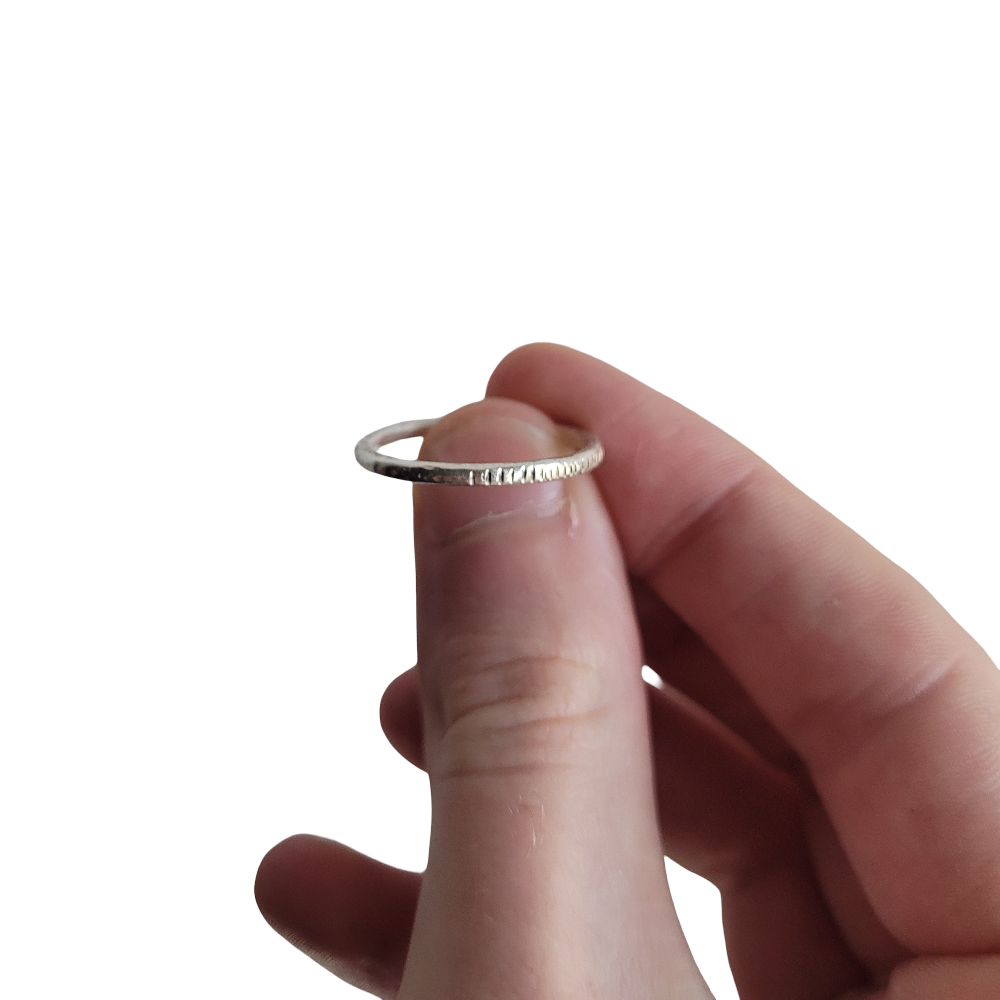
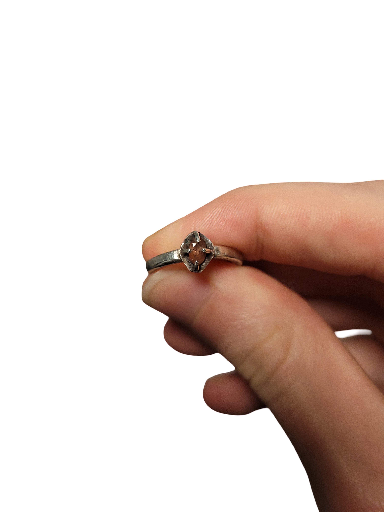
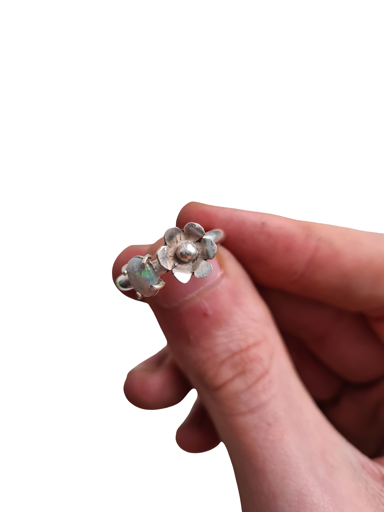
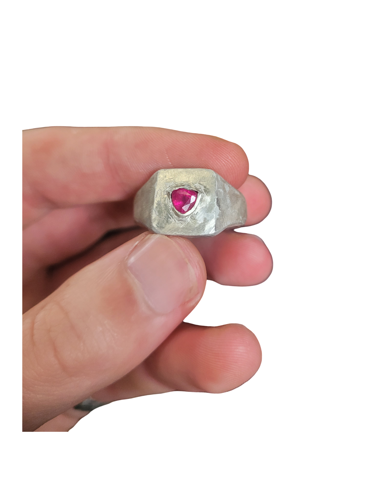

Passion for jewellery
In about 2022 I became interested in jewellery, I had a few pieces that i enjoyed wearing, they made me feel confident. They were like a set of armour I could wear over my anxiety. Along side becoming interested in jewellery i also started to become interested in minerals, rocks, and gem stones. So i took up an evening class in jewellery making. It was a good start and I made a few peices i was proud of.

This is the first ring i made, it was simple, i wanted to give it a bit of character so i hammered notches in half of the ring. There were other pieces that came out of these classes, and a failure as well, but the main thing that came out of these classes was a desire to do more. I bought some basic tools so i could start doing it at home and work on different designs.

This is my first ring with a stone setting, it is very naive, I soldered on peices of silver wire to a silver plate, and then soldered this construction onto the ring, i filed away at the plate and ring band itself where the stone(pink tourmaline) would sit. I was lucky to pull this off, soldering the setting onto the ring band with the same hard solder made it very likely that the setting would fall apart when soldering, but it stayed together thankfully.
I made a collection of other rings over this period, learning lessons along the way, one of the main considerations I now take on is wearability(is it comfortable), no one will want to wear something if it is too bulky or catches every time they put on their cardigan.

pictured above is one of my most proud peices, a silver ring with a opal and a silver flower i made, all hand built.

This one is one of the rings from my first time doing lost wax/investment casting. every little detail comes out in the casting so be sure to get it as neat as possible in wax to save time.